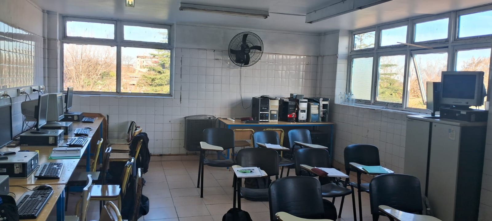
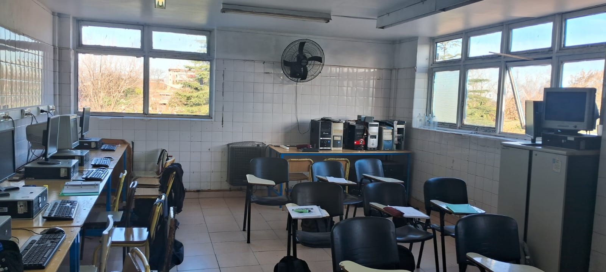
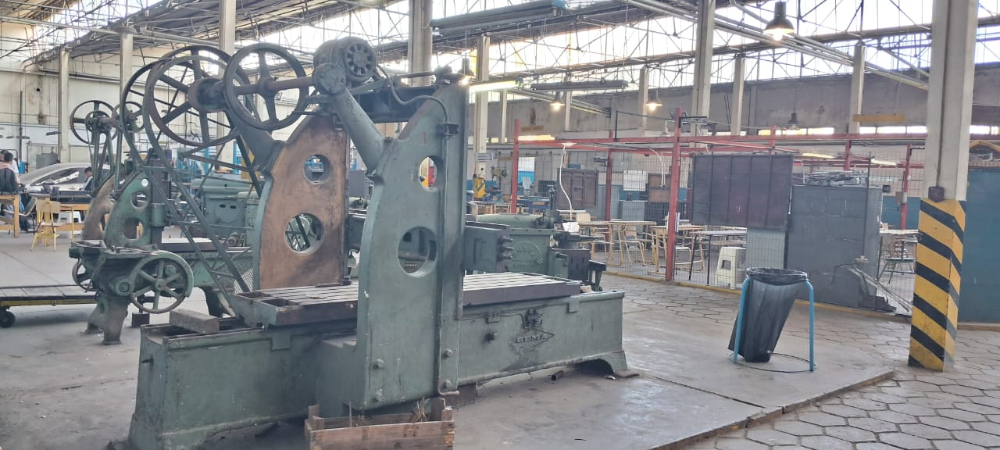
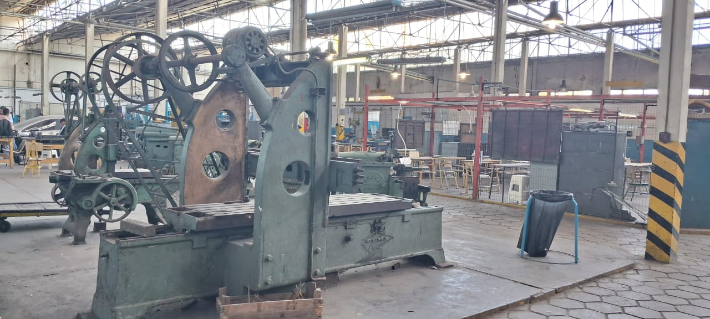

La Escuela de Educación Secundaria Técnica N°5 “John F. Kennedy” de Lanús es un ámbito educativo con fuerte compromiso en la formación técnico-humanística de los estudiantes. Nuestra misión es formar jóvenes con pensamiento crítico, responsabilidad social y sólidos conocimientos técnicos, capaces de integrarse a un mundo laboral cambiante y de continuar sus estudios superiores con éxito.
Nos caracterizamos por ofrecer tecnicaturas orientadas a las demandas actuales de la industria y la sociedad, promoviendo la innovación, el trabajo en equipo y el respeto. Contamos con docentes comprometidos, infraestructura adecuada y proyectos que vinculan la teoría con la práctica real.
Formamos profesionales capaces de desarrollar software, aplicaciones web y móviles...

Especialización en redes, hardware, mantenimiento de equipos y sistemas operativos...

 

Orientación en automatización industrial, máquinas eléctricas, neumática, hidráulica...

 
